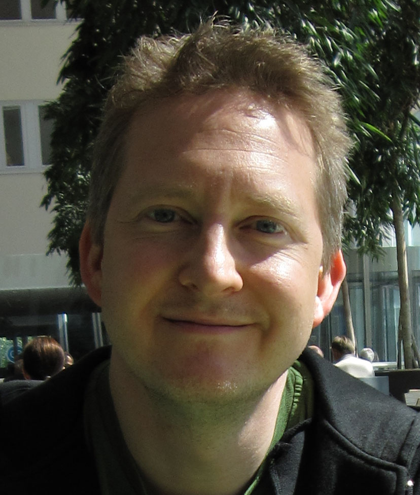
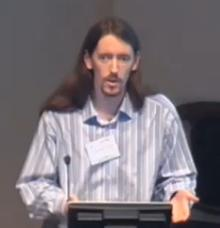
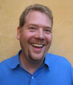
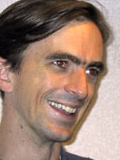
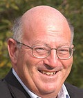
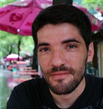
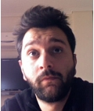

 Peter Andersson Developer at Erlang/OTP in a love-hate relationship with Software Testing |  Joe Armstrong Father of Erlang |  Thomas Arts Professor and co-founder of QuviQ AB |  Tino Breddin Embedded Erlanger from Dresden |  Laura M. Castro Erlang enthusiast, researcher and constant learner |
 Francesco Cesarini Founder Erlang Solutions and co-author of Erlang Programming |  Duncan Coutts Well-Typed LLP |  Sadek Drobi Consultant and programming languages Evangelist at Valtech |  Clara Benac Earle Ex-Ericsson CS Lab and model checking expert | Emil Eifrem Founder of Neo4j |
 Gustav Simonsson, Henrik Nordh, Fredrik Andersson, Fabian Bergström, Niclas Axelsson and Christofer Ferm Authors of LoPEC |  Lars-Ake Fredlund Erlang researcher and creator of McErlang | Rudolph van Graan Director, Pattern Matched Technologies and Telecommunications Consultant | Mariano Guerra A Python programmer in the Erlang world |  John Hughes Inventor of QuickCheck and Erlanger of the year |
Nikos Kakavoulis CEO/Founder of SocialCaddy |  Rusty Klophaus Senior Engineer at Basho Technologies, Riak committer |  Jan Lehnardt CouchDB committer and evangelist |  Huiqing Li Inventor of Wrangler |  Adam Lindberg |
 Kenneth Lundin Manager of the Erlang/OTP dev team | Marek Majkowski | Hans Nilsson Experienced Erlang expert and SIP implementation pioneer | Michael Nordström Erlang hacker at Klarna |  Ulf Norell QuickCheck expert |
Martin Odersky Inventor of Scala | Panos Papadopoulos Software Architect at SocialCaddy and web philosopher | Tom Preston-Werner Cofounder of GitHub and Erlectricity maintainer |  Tony Rogvall Code wrestler |  Mickaël Rémond Process One co-founder and ejabberd committer |
 Lahav Savir System Engineer and back-end Systems Architect | Justin Sheehy CTO of Basho Technologies and Riak commiter |  Michal Slaski Senior Erlang consultant and software architect | Nick Smallbone Functional programmer and member of the ProTest project - Chalmers University of Technology |  Kevin Smith Riak Commiter at Basho |
 Erik Stenman CTO of Klarna |  Don Syme Designer and co-implementer of F# |  Dave Thomas Father of OTI, CEO of Bedarra Corporation |  Simon Thompson Creator of Wrangler and co-author of Erlang Programming | Kresten Krab Thorup CTO of Trifork and Creator of Erjang |
 Alvaro Videla PHP coder by day, Erlang fanboy by night |  Robert Virding Inventor of Erlang and Bluetail co-founder |  Jon Vlachoyiannis CTO SocialCaddy | Daniel Widgren Erlang hacker at Klarna | Ulf Wiger Uber Erlang programmer and CTO of Erlang Solutions |
Dominic Williams An Agile voice in the Erlang world | Marc Worrell | David Wragg |